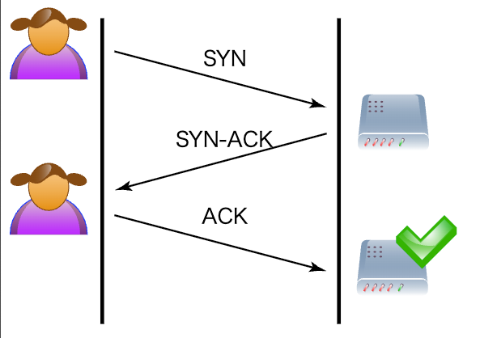

Network¶
ネットワーク基礎知識¶
ネットワークの登場¶
ネットワークの登場はコンピューターがどのように利用されてきたかと深い関係がある。 コンピューターは単独で利用されるスタンドアローンから、複数のコンピューター同士が通信し合うネットワーク、世界中のコンピューターがつながるインターネットへと進化していった。
プロトコル¶
世界中のコンピューターが、自身のOSやCPUを気にすることなく通信を行うためには、通信をするためのルールを決める必要がある。それがプロトコルである。
プロトコルは人間のコミュニケーションにおける言語（英語や日本語）であり、異なるとコミュニケーションを取ることができない。
例えば、現在の通信における主流のパケットにおける通信では、通信の内容は「パケット」に分割され、以下のような構成で送信される：
ヘッダ部：宛先IPアドレス、送信元ポート番号など
データ部：実際に伝えたい中身（HTMLデータなど）
プロトコルは、ヘッダ情報の構成や、通信手順、エラー処理の方法などを厳密に定義している。
プロトコルは、標準化の流れがありISO(国際標準化機構)やIETFが標準化を定めている。 現在最も利用されているTCP/IPはデファクトスタンダードとなっており、IETFが標準化している。
OSI参照モデル¶
ISOが標準化を検討した際に、ネットワークにおけるプロトコルにおいて、OSI参照モデルを提唱した。 OSI参照モデルは、ネットワークプロトコルを7つの階層にモデリングしており、各層の役割を定義しているため、TCP/IPや他のプロトコルについて理解する際もガイドラインとして非常に参考になる。 ただし、OSIモデルは理論的には7層だが、実務で使われるのはTCP/IPモデル（4階層）。セッション層・プレゼンテーション層はアプリケーション層に吸収されている。
OSI参照モデルは、ネットワークプロトコルを7つの階層に分けて定義している。 同じ階層同士では同じプロトコルで、上下の階層はインターフェースで、ルールを定めている。 アプリケーション層で生成されたデータは、下位の層に渡されるたびに各層のヘッダが付加されていく。受信側では逆順にヘッダを剥がしながら、最終的にアプリケーション層でユーザーが意味のある形で受け取る。
層 |
名称 |
主な役割 |
|---|---|---|
第7層 |
アプリケーション層 |
ユーザーが直接触れるアプリケーションの通信インターフェースを提供。 |
第6層 |
プレゼンテーション層 |
データの表現形式（文字コードや圧縮、暗号化）を統一する役割。 |
第5層 |
セッション層 |
通信の開始〜終了までの論理的な会話（セッション）を管理。中断や再開処理を制御。 |
第4層 |
トランスポート層 |
アプリケーション間の通信を確実に届けるため、ポート番号の割当や通信の信頼性確保（TCP）を行う。 |
第3層 |
ネットワーク層 |
ネットワークを越えたルーティングを行い、IPアドレスを用いて適切な宛先までパケットを転送。 |
第2層 |
データリンク層 |
隣接ノード間での誤り検出やフレーム化、MACアドレスによる識別を行う。 |
第1層 |
物理層 |
電気信号・光信号・電波など、物理的な通信手段を定義。コネクタの形状や電圧レベルも含まれる。 |
例えば、HTTP通信を行う際の各層の役割は以下
アプリケーション層
ユーザーがWebブラウザを使い、HTTPでリクエストを生成する。
プレゼンテーション層
TLSによってデータが暗号化される。文字コードなども変換される。
セッション層
クライアントとサーバーのセッション（対話）を開始する（TLSハンドシェイクなど）。
トランスポート層
TCPでデータが分割・番号付けされ、送信順序や再送制御も行う。ポート番号を指定してアプリケーションを識別。
ネットワーク層
送信元→宛先IPまでの経路を決定。ルーターを介して中継される。
データリンク層
MACアドレスを使い、LAN内での最終配信先を決定。エラーチェックも行う。
物理層
LANケーブルやWi-Fiなどで、実際に電気信号としてデータを送信する。
ネットワーク機器の分類と役割¶
OSI参照モデルやTCP/IPモデルを理解したうえで、実際のネットワーク通信を支える装置（ネットワーク機器）についても整理しておく。
リピーター（Repeater）【第1層：物理層】¶
リピーターは電気信号の中継器。信号が弱まってしまう距離でも通信できるように、信号を再生成して延長する。
層：OSI第1層（物理層）
主な役割：信号の増幅・再送
装置例：ハブ（旧式のネットワーク装置）
L2スイッチ（レイヤ2スイッチ）【第2層：データリンク層】¶
MACアドレスをもとに、LAN内での宛先を判断し、フレームを転送するスイッチ。
層：OSI第2層
主な役割：MACアドレスベースの転送・スイッチング
特徴：ブロードキャストドメインは分けられない（VLANなしの場合）
L3スイッチ（レイヤ3スイッチ）【第3層：ネットワーク層】¶
IPアドレスを見て、異なるネットワーク間の通信（ルーティング）も処理できるスイッチ。
層：OSI第3層
主な役割：ルーティング機能付きスイッチング
特徴：VLAN間ルーティングや高速な転送が可能
L4〜7スイッチ（マルチレイヤスイッチ）【第4層以上】¶
トランスポート層（ポート番号）やアプリケーション層（HTTPヘッダ）まで見て、より高度な制御や振り分けが可能。
層：OSI第4層〜第7層
主な役割：
L4：AWSのNLBはL4スイッチ。ポート番号に基づくロードバランシング（例：TCP80/443）
L7：AWSのALBはL7スイッチ。URLやクッキー、HTTPヘッダによる振り分け（例：/apiと/imageで別のサーバーへ）
特徴：WAFやプロキシ、ロードバランサーなどに利用される
ゲートウェイ（Gateway）【各層にまたがる】¶
異なるプロトコルやネットワークの間をつなぐ翻訳装置的な役割。
主な役割：異種ネットワーク間の接続・中継（例：IPv4とIPv6間の変換、メールプロトコル間の中継）
特徴：OSIモデルでは明確に層を限定しない。アプリケーション層の処理を伴う場合もある
TCP/IP¶
TCP/IPとは、全世界のネットワークをつなげるインターネットで使われているプロトコル群（プロトコルスイート）の総称である。 「スイート」とは“ひとまとまりのもの”という意味で、TCP/IPは複数の通信プロトコル（HTTPやDNSなど）をまとめた集合体ということ。 名前には「TCP」と「IP」が含まれているが、実際には多くのプロトコル（HTTP, FTP, SMTP, DNSなど）を含んでおり、単なる2つのプロトコルだけを指しているわけではない。
TCP/IPがインターネットの標準プロトコルスイートとして採用された背景には、次の3つの要因がある。
パケット交換ネットワークとの相性
かつての通信は電話網と同じ回線交換方式（中央集権的）だったが、通信路の効率性や障害耐性の観点からパケット交換方式が注目された。 TCP/IPはこの分散型のパケット通信に最適化された設計を持っており、ネットワーク破壊への耐性も含めて軍事・学術的に注目された。UNIX OSへの標準搭載
1980年代、TCP/IPは当時広く使われ始めていたUNIX OSに標準で搭載された。 UNIXの普及とともにTCP/IPも自然と広まることになり、結果としてネットワークの共通言語となっていった。オープンな標準化と実装主義
TCP/IPはIETF（Internet Engineering Task Force）で議論され、RFC（Request For Comments）として誰でも参照・参加できる形で仕様が公開されている。 しかも仕様の多くは実装に基づいて定義されるため、理論倒れにならず、実際に動くことが前提となっていた。これは後発のOSI参照モデルとの大きな違いだった。
TCP/IPとOSI参照モデル¶
OSI参照モデルは、ネットワークを7つの階層に分けて整理することで、ネットワーク設計やトラブルシュートを論理的に理解するためのモデル。
一方でTCP/IPは実装主義で、現実のネットワークを構築・運用する上で使われている実用的な4階層モデルである。
OSI参照モデル |
TCP/IPモデル |
主なプロトコル例 |
担当 |
|---|---|---|---|
7. アプリケーション層 |
アプリケーション層 |
HTTP, FTP, DNS, SMTP |
アプリケーションプログラム |
6. プレゼンテーション層 |
（アプリケーション層に含まれる） |
- |
アプリケーションプログラム |
5. セッション層 |
（アプリケーション層に含まれる） |
- |
アプリケーションプログラム |
4. トランスポート層 |
トランスポート層 |
TCP, UDP |
OS |
3. ネットワーク層 |
インターネット層 |
IP, ICMP, ARP |
OS |
2. データリンク層 |
データリンク層 |
Ethernet, PPP, Wi-Fi |
デバイスドライバ・ネットワークインターフェース |
1. 物理層 |
データリンク層 |
UTPケーブル, 光ファイバーなど |
デバイスドライバ・ネットワークインターフェース |
インターネット層¶
この層は「データを目的地まで届ける」ことにフォーカスした層。IPアドレスを利用してルーティングやアドレス指定といった処理を担当する。 「インターネット層」は“IPを中心としたルーティング機能”に特化しており、OSIモデルのように細かい制御機能（例えばQoSなど）まではカバーしていない。
プロトコル |
役割 |
主な特徴 |
|---|---|---|
IP |
パケットに送り先・送り元のIPアドレスを付けて配送 |
コネクションレス・ルーティング機能で、再送などはしない。 |
ICMP |
通信エラーや到達確認を行う |
ping・tracerouteに利用される制御用プロトコル |
ARP |
IPアドレスをMACアドレスに変換する |
LAN内での実通信のために必要なアドレス解決プロトコル |
トランスポート層¶
ここではアプリケーション間のデータ伝送の信頼性を保証する。コンピューターの内部では複数プログラムが動作しており、アプリケーションの識別にはポート番号を利用。
プロトコル |
役割 |
主な特徴 |
|---|---|---|
TCP |
信頼性のある通信を実現（コネクション型） |
3-wayハンドシェイク、順序保証、再送制御あり |
UDP |
最小限の処理で素早く送信（コネクションレス型） |
軽量・再送なし・順序保証なし |
TCPは、ホスト間のデータの到達性を保証し、パケットの消失や順番の入れ替わりがあっても、TCPが解決してくれる。 一方でUDPは、コネクションレスのため、相手へ正しく届いているかは実施せず、アプリケーション層に任せている。 「信頼性が重要ならTCP」「リアルタイム性が重要ならUDP」と覚えると良い。
特徴項目 |
TCP |
UDP |
|---|---|---|
接続 |
コネクション型 |
コネクションレス型 |
信頼性 |
高い（再送・順序制御あり） |
低い（制御なし） |
速度 |
遅め（オーバーヘッドあり） |
速い（軽量） |
用途例 |
Web通信, メール, SSH |
DNS, ストリーミング, ゲームなど |
アプリケーション層¶
利用者が直接使う「目的に応じた通信プロトコル」が該当する層。
プロトコル |
用途 |
通信方式 |
説明 |
|---|---|---|---|
HTTP |
Web閲覧 |
TCP |
WebブラウザとWebサーバ間の通信 |
HTTPS |
暗号化されたWeb通信 |
TCP |
HTTP+TLSで安全な通信 |
FTP |
ファイル送受信 |
TCP |
認証あり、制御/データの2つのチャネルを使用 |
SSH |
リモート接続 |
TCP |
セキュアなターミナル通信 |
SMTP |
メール送信 |
TCP |
メール送信用プロトコル |
POP3 |
メール受信 |
TCP |
クライアントにダウンロードして読む |
IMAP |
メール受信 |
TCP |
サーバ上に保存しながら操作可能 |
DNS |
名前解決 |
UDP/TCP |
ドメイン名 ⇔ IPアドレスの変換 |
DHCP |
IPアドレス配布 |
UDP |
自動でIPやゲートウェイを配布する |
通信イメージ¶
TCP/IP通信では、アプリケーションが作ったデータが「上から下へ」と層を通過するたびにヘッダ情報が追加され、送信される。
受信側では「下から上へ」と各層のヘッダを1つずつ剥がして中身を読み取り、最終的にアプリケーションへ届けられる。

ここで注意したいのが、「IPとMACの違い」。
IPアドレス：通信の最終目的地（たとえばWebサーバなど）を示す。
MACアドレス：通信の次の1ホップ先の相手（物理的に直接つながっている機器）を示す。
たとえば、Aという端末がCにデータを送りたい時に、AとCは直接つながっておらず、間にBというルータがいる場合：
Aは最終的にCに届けたい（IPアドレス：C）
しかし直接は届かないため、まず中継先のBに渡す
Aは「C宛のIPパケット」を作るが、データリンク層ではBのMACアドレスを使って送信する
Bが受け取った後、今度はCのMACアドレスを使ってデータを再送する 各層では以下で定義されており、各ホップごとにMACアドレス（データリンク層の相手）は変化していく
各層での「通信相手」の違いは以下に整理できる。
層 |
通信の相手 |
備考 |
|---|---|---|
アプリケーション層 |
最終的な通信アプリケーション |
HTTPやFTPのクライアント・サーバ |
トランスポート層 |
最終的な通信アプリケーション（ポート） |
TCP/UDPのポートで指定 |
インターネット層 |
最終的な宛先のIPアドレス |
例：203.0.113.5 |
データリンク層 |
次の中継先（1ホップ先）のMACアドレス |
ARPで解決し、その都度変わる |
データリンク層¶
データリンク層は、物理的に直接接続されたノード間での通信手順やフォーマットを定める層である。OSI参照モデルでは、物理層（ビット伝送）とデータリンク層（フレーム転送）に分けて定義されている。
具体的な役割としては：
物理層：電圧や光の点滅といった物理的信号を0/1のビット列に変換
データリンク層：ビット列をフレームというまとまりにし、エラー検出や再送、ノード識別（MACアドレス）を行う
MACアドレス¶
データリンク層では、宛先を特定するために MACアドレス（Media Access Control address）を使用する。MACアドレスは各NIC（ネットワークインターフェースカード）に割り当てられた48ビットの識別子で、以下の構成を持つ：
上位2ビット：ユニキャスト・マルチキャスト・ユニバーサル・ローカルアドレス
上位22ビット：ベンダ識別子（OUI: Organizationally Unique Identifier）
下位24ビット：ベンダ内のシリアル番号
これにより、世界中で一意な識別が可能となっている。
データリンクにおける通信¶
データリンク層における通信方式は大きく2つに分類される：
方式 |
特徴 |
|---|---|
媒体共有型 |
同一の通信線を複数の機器が共有する。 |
媒体非共有型 |
各通信はスイッチによって分離されるため衝突が発生しない。 |
イーサネット¶
イーサネットは最も一般的なデータリンク層プロトコルであり、現在の有線LANの主流となっている。IEEE 802.3により標準化されており、以下のような進化を遂げてきた：
初期は CSMA/CD により衝突を回避していた（ハブ接続）
現在は スイッチを用いた媒体非共有型が主流
通信速度は10Mbps → 100Mbps → 1Gbps → 10Gbpsと高速化
フレーム構造（代表的な構成）：
[ Preamble | 宛先MAC | 送信元MAC | タイプ | データ | FCS ]
Preamble：同期用ビット列（前置き）
FCS (Frame Check Sequence)：CRCによるエラー検出
無線通信¶
無線通信もデータリンク層に対応したプロトコルが存在する。
IEEE 802.11：無線LAN（Wi-Fi）で使われる規格
3GPP規格（3G/4G/5G）：モバイル通信で使用。無線リンクでもフレーム構造に類似したデータ単位（MAC PDUなど）を扱い、データリンク層の機能（再送、順序制御など）を提供する。
Wi-Fiでは CSMA/CA（Collision Avoidance） を使い、衝突が発生しにくい方式を採用している。
PPP（Point-to-Point Protocol）¶
PPPは、主にモデムなどで使われていた1対1の通信回線におけるデータリンク層プロトコルである。電話回線など物理的に共有しない通信において使用された。
現在では、広域ネットワーク接続やVPNトンネル内などで使われることもあるが、EthernetやIPベースの技術に主役を譲っている。
インターネット層(IP)¶
TCP/IPモデルにおける「インターネット層」は、ネットワーク間でのエンドツーエンド通信を成立させる役割を担う。
データリンク層：直接つながったノード間の通信（隣の機器まで）
インターネット層：ルーターを中継しながら離れたノードまで届ける通信
IPパケットは、ルーターをホップしながら宛先に届く。各ホップ間の実際の通信（物理的なやりとり）はデータリンク層に依存するため、イーサネットだろうがWi-Fiだろうが、インターネット層にとってはどうでもいい。 TCP/IPにおけるインターネット層を支えるプロトコルがIP(Internet Protocol)とICMP（Internet Control Message Protocol）。
IPの3つの役割¶
IPアドレス
ルーティング
パケット分割と再構築
IPアドレス¶
IPアドレスは、その下の階層で利用されているデータリンク層の形式に関わらず共通的な形式になっている。 すなわち、ネットワーク層ではデータリンク層を意識しない設計となっている。
IPv4：32ビット（4オクテット）、例：192.168.1.1
IPv6：128ビット（16オクテット）、例：2001:0db8::1
かつてはIPアドレスが「クラスA〜C」に固定されていた
クラス |
ネットワーク部 |
ホスト部 |
割当範囲 |
台数 |
|---|---|---|---|---|
A |
8bit |
24bit |
0.0.0.0/8〜 |
約1,600万台 |
B |
16bit |
16bit |
128.0.0.0/16〜 |
約6万台 |
C |
24bit |
8bit |
192.0.0.0/24〜 |
254台 |
しかしこの設計は次第に破綻してしまう。
大企業がAクラス（1600万台）を独占し、IPアドレスの浪費
小規模組織にはCクラスでも足りない
結果：グローバルIP枯渇が現実に
この課題に対して3つの技術が利用されるようになった
CIDR（Classless Inter-Domain Routing）
ネットワーク部の長さを柔軟に指定可能
/24 や /16 などでアドレス空間を細かく切って使える
ルーティング効率の向上（最長一致アルゴリズム）
NAT（Network Address Translation）
1つのグローバルIPで複数の端末を代表して通信
プライベートIPとグローバルIPの変換
グローバルIPの枯渇対策として世界中で普及
プライベートIP（RFC1918）
インターネット上ではルーティングされない特別な範囲。
ルーターやファイアウォールは、これらを内部通信と認識し、外部への問い合わせは行わない
これにより、全てのホストにグローバルIPを割り振る必要性がなくなった
必要なものにパブリックIPとしてグローバルIPを割り振ればよくなった
範囲 |
用途 |
|---|---|
10.0.0.0/8 |
大規模ネットワーク |
172.16.0.0/12 |
中規模 |
192.168.0.0/16 |
小規模（家庭LANなど） |
グローバルIPの割当と管理は、世界的な調整機関である ICANN（アイキャン） が行っており、 その下に5つのRIR（地域インターネットレジストリ）が分担して各国・各地域に配布している。
ルーティング¶
ルーターやホストは「宛先のIPアドレスに対して、次にどこへ送るか？」というルーティングテーブルを持っている。 IPプロトコル自体にはルーティング機能はない（テーブルがある前提）
経路は静的に設定するか、ルーティングプロトコルで動的に構築する必要がある。 ※ルーティング詳細詳細は別節で解説する。
パケット分割と再構築¶
データリンク層（例：イーサネット）のMTU（最大転送単位）が小さいと、IPはデータを分割して送る必要がある ルーターが分割（フラグメント）し、受信側が再構築する
ただし、IPv6ではパケット分割は原則としてルーターでは行わない設計に変更されている（効率化のため）
IPv6¶
IPv4の構造的限界（最大43億個のアドレス）を打破するため、IPv6（128bitアドレス）が登場した。
IPv4は、4オクテッドで10進数で4区切りで表現されていた。 IPv6は、16オクテッドで16進数で8区切りで表現される。
IPv6はただの「拡張版IPv4」ではなく、NAT不要、ヘッダー最適化、QoS強化などの設計思想も盛り込まれている。
ネットワーク層(IP以外)¶
DNS(Domain Name System)¶
IPアドレスは「192.0.2.1」のように数字で表されるが、人間が覚えるには不便。 そこで、ドメイン名（例：example.com）とIPアドレスを対応付ける仕組みとしてDNS（Domain Name System）が利用される。 もともとは1つのファイル（hosts.txt）で全ホスト名を集中管理していたが、インターネットの拡大に伴い、DNSにより分散管理できる仕組みに変化。
ドメイン名は「木構造（階層構造）」で管理される。右側から左へ向かって階層が下がる。
hoge.ac.jp
jp … 国別トップレベルドメイン（ccTLD: country code Top Level Domain）
ac … 分野別セカンドレベルドメイン（Academic）
hoge … 固有のホストや組織名を示すドメイン
DNSで名前解決を行うのはリゾルバ（Resolver）と呼ばれる機能。 リゾルバは問い合わせを行い、最終的にIPアドレスを取得する。 この過程でネームサーバ（Name Server）が階層的に役割を分担する。
ルートネームサーバに問い合わせ（「.jpはどこにある？」）
ルートは.jpのネームサーバ**を案内
jpのネームサーバに問い合わせ（「ac.jpはどこ？」）
ac.jpのネームサーバがhoge.ac.jpの情報を案内
最終的にhoge.ac.jpを管理するネームサーバからIPアドレスを取得
DNSでは、以下のような代表的なレコードを設定する。
レコード種別 |
用途 |
記載例 |
|---|---|---|
Aレコード |
ドメイン名 → IPv4アドレスの対応付け |
example.com → 192.0.2.1 |
AAAAレコード |
ドメイン名 → IPv6アドレスの対応付け |
example.com → 2001:db8::1 |
CNAMEレコード |
別名（エイリアス）を本来のドメインに対応付け |
www.example.com → example.com |
MXレコード |
メールの配送先サーバを指定 |
example.com → mail.example.com (優先度10) |
NSレコード |
ゾーンを管理するネームサーバを指定 |
example.com → ns1.example.net |
TXTレコード |
任意のテキスト情報（SPFやドメイン所有証明など）を格納 |
v=spf1 include:_spf.example.com ~all |
SOAレコード |
ゾーン情報の管理者・更新情報を保持 |
シリアル番号、更新間隔など |
ARP(Address Resolution Protocol)¶
ARPは、IPアドレスから対応するMACアドレスを取得するためのプロトコル。 ネットワーク層（IPアドレス）とデータリンク層（MACアドレス）を結びつけ、同一ネットワーク内での通信を可能にする。
IP通信では最終目的地のIPアドレスは変わらないが、データリンク層の送信先MACアドレスは「次に通信する機器」に変わる。 例えば、AからBへ通信する際にルーターCを経由する場合、パケットは次のようになる。
送信元IP: A 宛先IP: B
送信元MAC: A 宛先MAC: C（次のルーター）
ルーターCに届いた後、宛先MACはBのものに書き換えられて再送される。
ARPの動作はARP要求（Request）とARP応答（Reply）に分けられる
ARP要求（Request）:送信元が「このIPアドレスのMACアドレスを知っている人は応答して」というブロードキャストを送信
ARP応答（Reply）: 宛先IPアドレスを持つ機器が、自分のMACアドレスをユニキャストで返す。
ARPを利用する場合、同一ネットワーク内に宛先IPのホストがある場合は、宛先のホストが直接ARP応答を得ることができる。 同一ネットワーク内に宛先ホストがない場合は、デフォルトゲートウェイ（ルーター）のIPに対してARPを行い、ルーターのMACアドレスを取得する。
ICMP(Internet Contorol MessageProtocol)¶
ICMPは、ネットワークが正常に動作しているかを確認したり、異常発生時にトラブルシューティングを行うために使われるネットワーク層のプロトコル。 IP通信の補助的な役割を持ち、パケットが届かなかった理由や経路上の問題などを通知する。
主な特徴
ネットワーク層（IPと同じ層）で動作する
アプリケーションデータの転送ではなく、制御メッセージを送受信する
通信失敗や遅延などの診断に利用される
代表的なメッセージは以下
メッセージ種別 |
目的 |
|---|---|
Echo Request / Echo Reply |
相手が応答可能かを確認（pingコマンドが使用） |
Destination Unreachable |
宛先に到達できない理由を通知（ルーティング不可、ポート未開放など） |
Time Exceeded |
パケットのTTLが0になったため破棄されたことを通知（tracerouteで利用） |
DHCP(Dynamic Host Configuration Protocol)¶
IPアドレスやネットワーク設定を自動で割り当てるプロトコル。 管理者はDHCPサーバーに対して、割り当て可能なIPアドレス範囲（スコープ）、サブネットマスク、デフォルトゲートウェイ、DNSサーバーなどの情報を設定しておく。 クライアントはネットワークに接続すると、自動的にこれらの設定を受け取り、すぐに通信を開始できる。
主な動作の流れ（DORA）
Discover – クライアントが「誰かIPアドレスくれませんか？」とブロードキャストする
Offer – DHCPサーバーが「このIP使えます」と提案を返す
Request – クライアントが「じゃあそれを使います」と要求する
Acknowledge – サーバーが「OK、そのIPで確定です」と承認する
手動設定不要で即座にネットワーク参加可能、アドレスの重複や設定ミスを防止、アドレスの有効期限（リース期間）を設定可能で、管理が容易といったメリットがある。
NAT(Network Address Translator)¶
プライベートIPアドレスを使う端末がインターネットに接続する際、パケットの送信元IPアドレスをグローバルIPアドレスに変換する仕組み。 主な目的は、アドレス空間の節約と内部ネットワークの秘匿。
NATには、IPアドレスだけを変換する方式と、NAPT（Network Address Port Translation）のようにポート番号も併せて変換する方式がある。 NAPTは送信元IPアドレスとポート番号を組み合わせることで、1つのグローバルIPアドレスで複数の内部端末の通信を同時に処理できる。
具体的には、このようにポート番号まで変換することで、同じグローバルIPでも多数の通信を同時に処理できる。
203.0.113.5:40001 ← PC-A (192.168.0.2:1050)
203.0.113.5:40002 ← PC-B (192.168.0.3:1060)
203.0.113.5:40003 ← PC-C (192.168.0.4:1070)
内部アドレス |
変換後アドレス |
|---|---|
192.168.0.2:1050 |
203.0.113.5:40001 |
192.168.0.3:1060 |
203.0.113.5:40002 |
192.168.0.4:1070 |
203.0.113.5:40003 |
ルーティング制御¶
インターネットは多数のネットワークがルーターによって相互接続されている。 パケットを宛先まで正しく届けるために、ルーターは適切な経路を選び、次に転送すべき方向を決定する。
この経路選択の仕組みをルーティング（経路制御）と呼ぶ。
ルーティングの全体像¶
インターネットは、多くの組織や事業者のネットワークが組み合わさって成り立つ。
インターネットを世界中のネットワークがつながった巨大な道路網とすると、この道路網を管理している単位がAS（Autonomous System）＝自立システムであり、その中と外で経路制御のルールが変わる。 インターネット上ではAS番号（ASN）が割り振られる。
ASの内側は1つの組織が管理しているため、経路選択は速度や信頼性を重視する。一方、AS間では契約やポリシーが関わるため、必ずしも最短経路を選ぶとは限らない。 この性質の違いから、AS内とAS間では異なるルーティングプロトコルが使われる。
種類 |
範囲 |
目的 |
プロトコル例 |
|---|---|---|---|
IGP（Interior Gateway Protocol） |
同一組織（同一AS）内のルーティング |
ネットワーク内部で最適経路を素早く決定 |
RIP/RIP2, OSPF, IS-IS |
EGP（Exterior Gateway Protocol） |
異なるAS間のルーティング |
経路ポリシーや契約条件に基づき経路を決定 |
BGP（Border Gateway Protocol） |
ルーティングテーブル¶
ルーターは、転送先を決定するためにルーティングテーブル（経路制御表）を参照する。 このテーブルには、宛先ネットワークと次に転送すべきルーター（ネクストホップ）の情報が格納されている。
ルーティングテーブルの作成方法は2種類。
方法 |
説明 |
特徴 |
|---|---|---|
Static（静的ルーティング） |
管理者が手動で経路を設定 |
小規模構成・固定経路に向く。障害時に自動切替できない |
Dynamic（動的ルーティング） |
ルーティングプロトコルを使ってルーター同士が経路情報を交換し、自動でテーブルを更新 |
大規模ネットワークに向く。障害時に自動で迂回経路を選択可能 |
ルーティングのアルゴリズム¶
ルーティングは大きく以下の方式に分類される。
方式 |
特徴 |
代表的プロトコル |
|---|---|---|
距離ベクトル型 (Distance Vector) |
各ルーターが「宛先までの距離（メトリック）」と「次に送るべき方向（ネクストホップ）」だけを隣接ルーターと定期的に交換する。経路計算は自分のテーブルだけで行う。 |
|
距離はホップ数や遅延などで表される。 |
RIP, IGRP |
|
リンク状態型 (Link State) |
各ルーターが「ネットワーク全体の接続情報（トポロジー）」を保持し、Dijkstraなどのアルゴリズムで最短経路を計算する。トポロジー情報はリンク状態広告（LSA）として全ルーターに配布される。 |
OSPF, IS-IS |
経路ベクトル型 (Path Vector) |
AS間ルーティングで用いられ、宛先までの経路情報（通過するASのリストなど）を広告する。経路ポリシーに基づく選択が可能。 |
BGP |
IGPとEGPではそれぞれの目的に沿って選択されるアルゴリズムが異なる。
IGP (Interior Gateway Protocol): 同一AS内でのルーティングに使用。距離ベクトル型やリンク状態型のプロトコルが該当。
EGP (Exterior Gateway Protocol): AS間ルーティングに使用。経路ベクトル型が主流。
RIP/RIP2（Routing Information Protocol）¶
方式: 距離ベクトル型 IGP
仕組み: ルーター間でルーティングテーブルを定期的に ブロードキャスト（RIP2ではマルチキャスト） し、宛先までのホップ数（最大15）をメトリックとして保持する。
特徴:
実装が簡単で小規模ネットワークに向く
複雑な経路やリンク障害に弱く、経路収束に時間がかかる（Count-to-Infinity問題）
メトリックが単純なホップ数のみで、帯域や遅延などは考慮しない
OSPF（Open Shortest Path First）¶
方式: リンク状態型 IGP
仕組み: ルーター間でリンク状態情報（LSA）を交換し、全体のトポロジーを構築。Dijkstraアルゴリズムでコスト（帯域などの重み）を最小化する経路を計算する。
特徴:
複雑なネットワークでも収束が速く安定
論理的に「エリア」に分割してエリア内のトポロジーを構築
エリア間の通信はバックボーンエリア（Area 0）を経由して行われる。
BGP（Gorder Gataway Protocol）¶
方式: 経路ベクトル型 EGP
用途: AS（Autonomous System）間のルーティング
仕組み: 各ASは、通過するASのリスト（ASパス）や属性情報を交換。ポリシーに基づいて経路を選択する。
特徴:
インターネットの基盤プロトコル
単なる最短経路ではなく、経路ポリシー（政治的・経済的理由を含む） による制御が可能
経路数が膨大なため、プレフィックス集約（CIDR）が必須
トランスポート層(TCP/UDP)¶
トランスポート層は、IP層で届いたデータを適切なアプリケーションに渡し、必要に応じて通信の信頼性を確保する役割を持つ。主な機能は次の2つ。
ポート番号によるアプリケーション識別
宛先IPアドレスまで到達した通信を、正しいプログラムに振り分ける。
通信の信頼性制御
データの到達保証や順序保証、再送制御などを行うか否かはプロトコル（TCP/UDP）によって異なる。
ポート番号¶
ポートは「通信の窓口」に相当し、1台のホスト上で複数のアプリケーションが同時に通信できるようにする。 ポート番号は 0〜65535 の範囲で割り当てられ、以下の分類がある。
範囲 |
名称 |
用途例 |
|---|---|---|
0〜1023 |
ウェルノウンポート |
HTTP(80), HTTPS(443), SSH(22) |
1024〜49151 |
登録ポート（Registered） |
アプリケーション固有のサービス |
49152〜65535 |
動的/プライベートポート |
クライアント側が動的に割り当て |
TCP/IPではポートと合わせて以下の5要素（5タプル）で通信を一意に識別する。
宛先IPアドレス
送信元IPアドレス
宛先ポート
送信元ポート
トランスポートプロトコル（TCP または UDP）
TCP(Transmission Control Protocol)¶
TCPはコネクション型・ストリーム型のプロトコルで、信頼性の高い通信を提供する。
主な機能として以下の機能を持つ
到達保証：ACK（受信確認応答）と再送制御
順序保証：シーケンス番号でデータの並びを管理
コネクション管理：スリーウェイハンドシェイクで接続確立
フロー制御：受信側のバッファ容量を通知して過負荷を防ぐ
輻輳制御：ネットワーク混雑を検知し送信速度を調整
コネクション管理のスリーウェイハンドシェイクの流れは以下の通り
クライアント → サーバ：SYN（接続要求）
サーバ → クライアント：SYN-ACK（要求受領＋接続要求）
クライアント → サーバ：ACK（接続確立応答）
 wikipedia
UDP(User Datagram Protocol)¶
UDPはコネクションレス型のプロトコルで、到達保証や順序制御、再送制御を行わない。 その代わりヘッダが小さく、処理が軽いため高速性とリアルタイム性に優れる。 主な利用例としてDNS、VoIP、オンラインゲーム、動画ストリーミングが挙げられる
輻輳制御やフロー制御なし
再送・順序保証なし
アプリケーション側で必要な制御を実装可能
ブロードキャスト・マルチキャストに適する
TCPとUDPの比較¶
項目 |
TCP |
UDP |
|---|---|---|
通信方式 |
コネクション型 |
コネクションレス型 |
到達保証 |
あり |
なし |
順序保証 |
あり |
なし |
輻輳・フロー制御 |
あり |
なし |
オーバーヘッド |
大きい |
小さい |
主な用途 |
Web、メール、ファイル転送 |
音声・動画配信、DNS、オンラインゲーム |